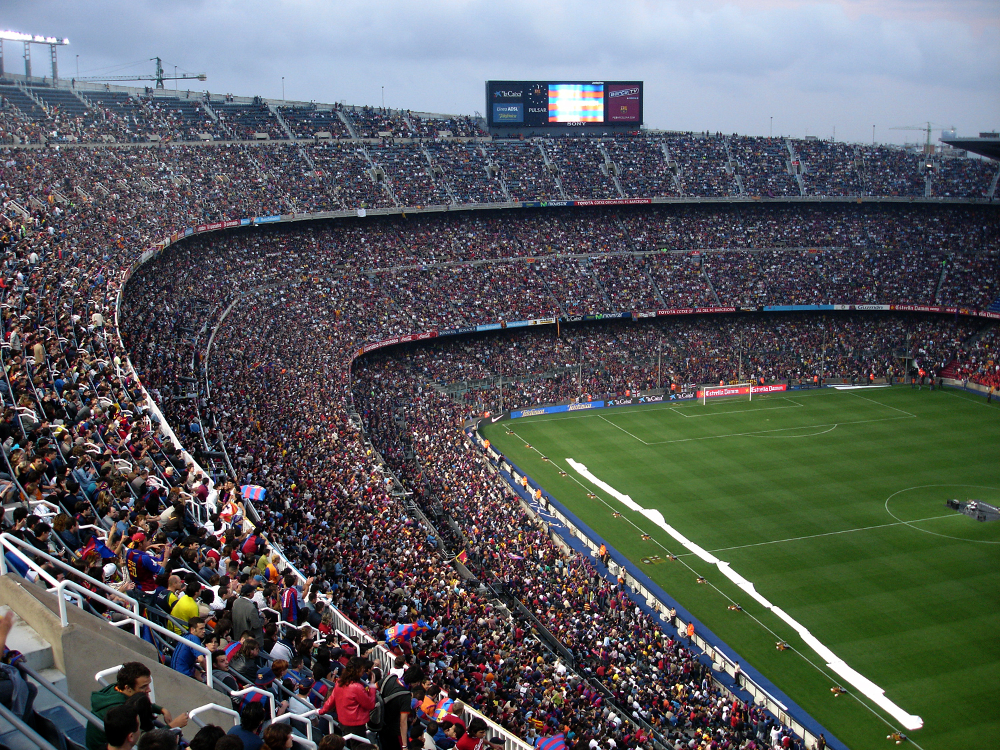
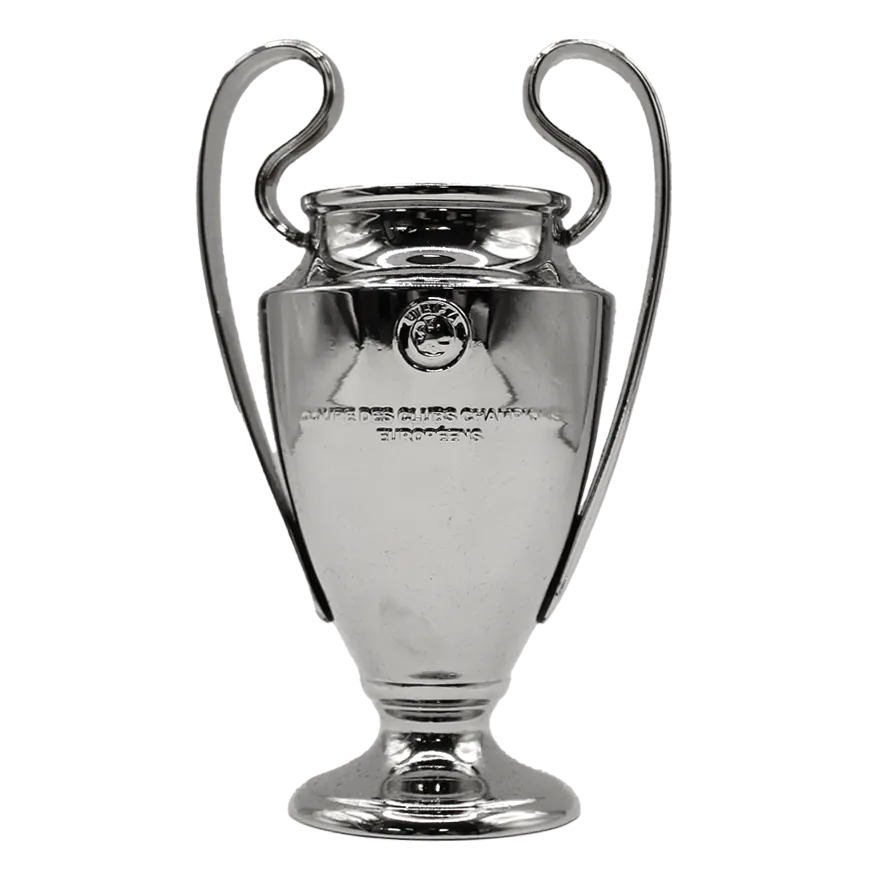
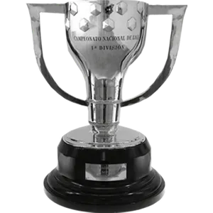
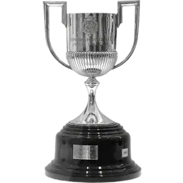

Jugadores Actuales


El Spotify Camp Nou
El Camp Nou es el estadio del FC Barcelona desde su inauguración en 1957. Con una capacidad para 99,354 espectadores, es el estadio más grande de Europa.
Actualmente en remodelación, el nuevo Camp Nou será un estadio vanguardista que mantendrá su esencia.
- Inauguración: 24 de septiembre de 1957
- Capacidad: 99,354 espectadores
- Récord de asistencia: 120,000 espectadores (1986)
- Dimensiones: 105m x 68m


Leyendas del Club


Palmarés

5 Champions League
1992, 2006, 2009, 2011, 2015

27 Ligas
Última: 2022/23

31 Copas del Rey
Récord absoluto